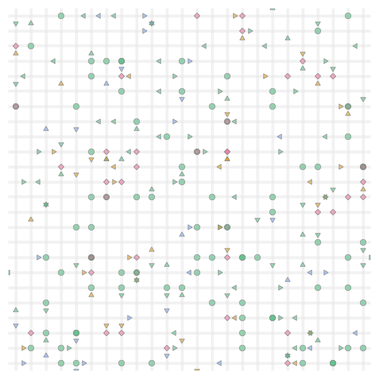

This report was produced in collaboration with RideFairTO. It is also available in PDF format.
1 Executive summary
The “Uber Files” revelations of summer 2022 showed that the company “broke laws, duped police and secretly lobbied governments” of all levels to achieve its aggressive expansion goals.
Unfortunately, Uber continues to take governments for a ride. This report addresses two topics:
Emissions. Uber makes big but vague promises about its impact on the environment, with its tagline “Your city. Our promise. Uber will be a zero-emission platform by 2040” (Uber, Inc. 2022a)). The City of Toronto takes this claim seriously by pursuing collaborative “emissions reductions targets” (City of Toronto 2021).
Our computer simulations show that Uber vehicles in Toronto, which had a passenger in the car less than half the time in 2020, are unlikely to ever have passengers in the car for more than 60% of the time. At least 40% of the time, Uber vehicles in Toronto will be driving empty.
Further, Uber vehicles are most highly occupied in busy, congested areas such as central Toronto, which are well suited to and well served by public transit. The expansion of Uber services in these areas can only add to congestion and draw passengers away from more sustainable and efficient public transit.
The pursuit of short wait times, essential to Uber’s popularity with riders, is incompatible with emissions goals. A difference of one minute in wait times adds another 1600 vehicles to Toronto roads, with their attendant congestion and emissions.
Driver Pay. Uber has persuaded governments to accept calculations based on low driver cost estimates and a treatment of “idle” drivers as not-really-working. This report argues that, at least for full-time drivers, a realistic estimate for the average pay rate is under $8 per hour.
But the problem of driver pay is broader than this low number. The Ontario government is adopting an approach of mandating wages based on “engaged time” – the time a driver is either driving a passenger or heading to pick one up. Computer simulations show that, as fares increase, the gig-work model means that more drivers enter the system and eat away those gains by reducing the time each driver spends “engaged” with passengers. No matter what number is dictated, “engaged time” pay rates do nothing to improve driver income.
While these results address the specific case of Uber drivers in Toronto, many of the factors at work are common to other forms of gig work and to other jurisdictions. There is a danger that an exploitative, unsustainable model of work may be cemented in place through poorly-designed regulations based on misleading lobbying from well-funded platform companies, and it must be addressed now.
2 Introduction
The unique nature of “gig work” as practiced by Uber and other platform companies is now well known. It has two main distinguishing features:
Free entry and exit. Platform companies design their systems to allow easy entry and exit of workers. Uber, for example, attempts to make sign-up as a driver as easy as possible. And once a driver is signed up, starting work is simply a matter of opening an app on a phone.
Piece rate payment. Platform companies have made every attempt to avoid classifying their workers as employees with an hourly pay rate. Instead, the gig-work model is to pay workers only while engaged in a task.
Like many other jurisdictions, the Province of Ontario and the City of Toronto are introducing policies to accommodate “gig work” into the broader framework of labour standards, and to align the operations of Private Transportation Companies (PTCs) with public priorities concerning transit, including efficiency, congestion, emissions, accessibility and more. Through computer simulations that capture poorly-understood dynamics of gig work, this report addresses these two current policy directions:
Congestion and emissions. The City of Toronto takes seriously Uber’s claim that it can reduce emissions through fleet electrification (City of Toronto 2021), and is “seeking to update by-laws to achieve vehicle electrification and emissions reductions targets for the vehicle-for-hire industry”. Can Uber and Lyft drive sustainable transit in Toronto?
The growth of precarious work. In its “Working for Workers Act, 2022”, also called the “Digital Platform Workers’ Rights Act”, the Government of Ontario introduced a “minimum wage” standard. It states that “minimum wage shall be paid for each work assignment performed by a worker”, which has been interpreted as covering only “engaged time”. What are the actual levels of pay for Uber drivers, and how will “engaged time” regulations affect driver income?
The role of Uber drivers waiting, unpaid, for the platform to assign them a trip, and the role of full-time Uber drivers both emerge as important topics through the report.
3 Computer simulation
Discussion and debate concerning Uber and other PTCs is vigorous but often hampered by lack of reliable data. The problem is made worse by the compromised nature of research based on negotiated or commissioned access to PTC data. The obvious conflicts of interest for researchers who benefit from access to corporate data (and sometimes direct payment) while claiming to be objective, were described some years ago by the International Labour Organization and others (Berg and Johnston 2019) but the recent “Uber Files” revelations provided essential confirmation and specifics (Lawrence 2022); (Mojtehedzadeh 2022); (The International Consortium of Investigative Journalists 2022)).
Some cities have negotiated or required access to ridehail data from the PTCs, but that data is not always accessible to the broader public. In those few cases where cities do make data public, most prominently Chicago (City of Chicago 2022) and New York City (New York City Open Data 2022), key elements are missing, such as the time that drivers spend on the platform but without a trip. The City of Toronto is now collecting detailed data from ridehail platforms, including time spent without a trip, but this data is not currently available for outside analysis beyond the City and its partners.
This report attempts to address the lack of reliable data. It presents a simple computer simulation of a ridehail system in a city, which can be calibrated against broad aggregate data, which are more widely available than detailed statistics. The simulation is intended to be as simple as possible while still capturing the essential elements of a ridehail system.
One goal of the simulation is to check intuition-based claims. Some policy discussions have led to talk at cross purposes with different unstated assumptions underlying rival claims, such as the relationship between the number of idle drivers and wait times or the effect of price changes on driver incomes. Both of these are discussed below.
A simple model that is independent of a particular city geography and road layout is easier for comparisons of the ridehail experience among cities. Also, a computer simulation allows “what if?” questions that may provide insights into the trade-offs faced by platform companies, municipal governments, drivers and passengers.
The ridehail simulation has three components, each of which is described below:
A geographical area. This is called a City, as most discussions about ridehail systems have focused on cities as the unit of comparison, but it need not be an actual “city”.
Vehicles. These drive around the city, respond to trip requests, and carry passengers from the trip origin to the trip destination.
Trips. These start as trip requests, and have an origin and destination within the city.
3.1 City
A city is represented as simply as possible: it is a square of uniformly-sized “blocks”. The square is, however, “wrapped”, so that a vehicle going off the top of the city appears at the bottom, and a vehicle going off the right of the city appears on the left. This is not as unrealistic as it may first appear: in the real world, drivers are not bound by city boundaries: some trips will go outside the city and some will come from the outside in, so the city can be thought of as an area with vehicles leaving and entering.
In this simplest model of a city, all locations are identical. A city with distinct zones is possible, and is described as an extension, below.
The unit of travel is a single block, and may be thought of as a distance, a time, or a combination of the two. It is often taken as a minute of travel time, but this is not a requirement.
3.2 Vehicles
Vehicles all drive at the same speed, and are always in one of three “phases”, which are commonly used in discussions of ridehail systems.
In phase P1 the driver is logged into a ridehail app, their vehicle is available for the platform to assigned it to trips, but they do not have an assigned trip. In this phase the vehicle drives randomly around the city. Vehicles in P1 are also sometimes called “idle”.
In phase P2 the platform has assigned a vehicle to a trip, the vehicle has accepted the assignment, and it drives towards the trip origin by the shortest route to pick up the passenger. This route may involve going “off the edge” of the city and appearing at the opposite side. P2 is sometimes called en route to picking up the passenger.
In phase P3, a vehicle has picked up one or more passengers and is driving by the shortest route to the destination. Evaluated across the whole driver population, the proportion of time drivers spend in P3 is also called the utilization rate for the system.
Once a trip is complete, the vehicle returns to P1, waiting for the next trip request.
Two other phrases common in the industry are also used. The combination of P1 and P2 phases, when a driver has no passenger in the car, is sometimes referred to as deadheading time. The combination of P2 and P3 phases, when a driver is assigned to a trip (and is either en route or with a passenger), is sometimes called engaged time.
3.3 Trips
A trip has an origin and a destination. In the simplest simulation, each is chosen randomly from intersections in the city, except that the two locations cannot be the same.
Each vehicle can take only one trip at a time. This can represent one passenger or a group of passengers, but it does not include “shared trips” such as the Uber Pool service where passengers request trips separately but share a vehicle for some portion of the trip. Ridehail operators have repeatedly tried to introduce such systems but, even before Covid, such shared trips made up a small portion of the total trips, and even when a passenger requested an “Uber Pool” trip they often ended up not sharing the vehicle (Innovation Transportation Services 2019). The simulation focuses entirely on “UberX-like” systems.
From the passenger’s point of view, trip time is in one of two phases: waiting or traveling. For randomly-selected trip origins and destinations, the average trip length in a city with C blocks along each side is C/2.
The “wait time” reported here, the time between placing a trip request and setting off to the destination, is different to that commonly used by Uber. With wait time defined as it is here, all the time of a trip (from request to arrival at the destination) is assigned to either waiting or travelling. For Uber, the wait time is the time elapsed until the driver appears at the location, but that leaves an unassigned “grey zone” period between driver arrival and the start of the trip, which may include time for the passenger to come out onto the street, time to find the vehicle (or for the driver to pick out the passenger), to possibly put luggage in the trunk, and to get in the vehicle.
3.4 The simulation
Each simulation is a sequence of moves. In each move, vehicles travel one block, from one intersection to the next. A typical move involves the following events:
Any new trip requests are generated.
Available vehicles are assigned to trips. The trip is assigned to the nearest available vehicle in P1, and if there are multiple vehicles at the same distance from the trip origin, one is selected at random. Vehicles always accept trip assignments.
Vehicles move from one intersection to the next. For each vehicle, this involves choosing a direction and moving a block to the next intersection. For vehicles in P1, the direction is random; for vehicles in P2 and P3, the direction is towards the trip origin or destination, as applicable.
Any trip that reaches its destination terminates.

At the end of each move, the simulation records and optionally plots the state of each vehicle and statistics about the overall system (fraction of vehicles in each phase, for example). Figure 2 illustrates a simulation in progress.
This framework is sufficient to simulate a city with a fixed supply of vehicles, and fixed demand (rate of requests). For some of the results below, this is all that is needed. For some other topics, the simulation has to be extended.
3.5 Extensions
The spirit of the simulation is to be as simple as possible, so that it can be calibrated using the very limited high-level public data available and so that it can be used comparatively. However, two extensions are necessary for some applications.
Many cities have a central “downtown” zone where the demand for ridehail traffic is high, surrounded by suburban areas where demand is lower. For example, 60% of trips in Metro Toronto originate within “Old Toronto” and East York, even though these two make up less than 20% of the total Metro area. This inhomogeneity is built into the model as two zones. A central zone has sides C/2 (so, one quarter of the city’s area) and has a higher rate of trip requests than the surrounding area, as shown in Figure 3 below. The trip destinations remain randomly distributed around the whole city. With an inhomogeneity of zero, the central zone is the same as the rest, with an inhomogeneity of one all trip requests take place in the central zone. In this way, and in the spirit of keeping the model as simple and parsimonious as possible, a single inhomogeneity parameter between zero and one captures the two zones.
The second extension, discussed in the section on Engaged Time standards below, is to allow vehicles to enter and leave the system in response to price and demand.
The use of random locations for trip destinations implies an average trip length of C/2 (regardless of inhomogeneity). To model an area where the average trip length may differ from this, a maximum trip length can be set, with trips distributed randomly over intersections within that distance.
3.6 Implementation
The simulation is implemented in the Python programming language, and the code is available on GitHub here. It can be run as a desktop application from a command line but is also available at a web site, here.
Simulations using the desktop application are controlled by a configuration file, which at its simplest specifies the size of the city (number of blocks on each side), the base demand rate (number of trip requests each move), and the number of vehicles.
The simulation is also available at a web site, where the configuration is set in the browser. The simulation runs in the browser (not at a server), using the Pyodide python distribution (The Pyodide development team 2022), and is the same code as the desktop. The web site is currently a “laboratory”, which allows experimentation but does not provide a way to save results. All results in this report are taken from desktop simulations.
3.7 Simulating ridehail in Toronto
Important data comes from a 2019 study by the City of Toronto and an update in 2021 (Policy & Innovation Transportation Services 2021, 2019). The November 2021 update chose Thursday Feb 6, 2020 as a representative day to assess the overall state of ridehail in Toronto, pre-pandemic (p25). Relevant statistics from this study are shown in Table 1.
| Quantity | Value | Simulation |
|---|---|---|
| Trips completed (R) | 193,902 (135/min) | 135 * |
| Average trip length (L) | 8.13km | 20 minutes * |
| Average vehicle speed (v) | 31 km/h | 30 km/h * |
| Percent of time: Period 1 (available for trip) | 40.5% | 40% |
| Percent of time: Period 2 (en-route to pick-up) | 11.2% | 12% |
| Percent of time: Period 3 (with passenger) | 48.3% | 48% |
| Active vehicles (N) | 6200 | 6000 |
Metro Toronto has an area of 625 square kilometres (= 25km*25 km). In the simulation it is represented as a 60 by 60 grid. Traffic speeds are taken as an average of 30 km/h (including all stops for pickups) so each block represents 50 seconds of travel. 55% of all trips start in a central zone, and the average trip length is 20 minutes.
Figure 4 shows that this simplified model can simulate an environment the scale of Toronto on a single laptop computer. It shows the results of several simulations, each with 135 trips per minute, or 200,000 in the whole day. The number of vehicles is varied, from 2000 to 10,000. The actual number of drivers on a given day will depend on the price set by the PTC, so each number of vehicles represents a possible outcome. Each simulation takes about ten minutes to reach a steady state, at which point we can take averages of the fraction of vehicles in each of the P1, P2, P3 phases, along with average wait times.
The actual number of drivers (6000), utilization rate (48%), and P2 value (12%) are captured well by the simulation as one of the possible states for a day with 200,000 trips in Toronto. (The wait time of 5.4 minutes is not comparable to Uber’s definition, which leaves some time unaccounted for --- see above). These particular values are the result of the price and commission set by Uber.
4 Ride Hailing cannot provide low-emissions transit
Figure 4 highlights the trade-off at the heart of the ground transportation industry.
At the right side of the graph, the number of vehicles is very large (10,000) compared to the demand for trips. Relatively few vehicles are “engaged” in a trip, either driving a passenger (P3) or en route to pick up a passenger (P2). Instead, most drivers are unpaid, waiting for a trip request, in the P1 phase. From a passenger’s point of view, the situation is much better. Wait time is short (shown here as a fraction of the trip length L), as there is always an available vehicle nearby.
In the middle of the graph, around 6000 vehicles, the P1 value is lower and the P2 and P3 values are higher than with 10,000 vehicles. Vehicles are busy more of the time, but passengers have to wait a bit longer for each trip.
Below 4000 vehicles, there are too few vehicles to keep up with demand. The P1 value hits zero (drivers are always busy) but the wait time goes off the charts as drivers cannot keep up with demand. The system never reaches a steady state.
The tension between driver and passenger interests here is clear. Passengers want a short wait time, but this requires a high proportion of drivers waiting for a trip, not being paid.
4.1 The limits of ridehail efficiency
The Province of Ontario and the City of Toronto invest in public transit for many reasons. One is that private cars are always going to take more space and produce more emissions than public transit. Figure 5 shows a photo produced by Australia’s Cycling Promotion Fund, which captures the geometry of the transit situation.
A trip by Uber is always going to produce even more emissions and take even more road space than a trip by a private car because Uber drivers spend half their time “deadheading’.
Uber claims it can resolve the tension by operating more efficiently and supporting a higher level of demand. Compared to taxis, whose numbers are regulated, Uber has consistently operated at higher levels of demand in major cities, but after almost ten years there is no evidence that the higher demand is the result of greater efficiency. Instead, the demand is produced mainly by lower prices, which in turn are a result of subsidised fares (Horan 2017). Uber’s record of continuing losses is shown in Figure 6.
It is true that with higher demand, a ridehail system can support a given wait time with fewer vehicles per trip: it generates higher utilization rates, but there are limits to this argument.
Figure 7 shows utilization rates and vehicles per trip (per minute) to sustain a six-minute wait time in a Toronto-like environment. It shows that an increase in demand does increase utilization, but there is a levelling off as demand increases. Even if the trip volume in Toronto were to increase to 200,000 per day (a 50% increase over the pre-pandemic numbers), the utilization rate would still increase to only 54% if wait time were kept at the same value.
Other cities, with New York City and San Francisco as outliers, have utilization rates (by time) of 50 to 60%.1 Toronto has a level of demand that is lower than Chicago, which may provide a reasonable upper bound to what can be expected of around 60%.
1 Utilization rates measured by distance may be slightly larger, as drivers drive slower when not engaged in a trip.
| City | Year | Time or distance? | Utilization rate |
|---|---|---|---|
| Chicago | 2015 | Distance | 59% |
| Chicago | 2019 | Distance | 55% |
| Boston | 2016 | Time | 47% |
| Boston | 2019 | Distance | 55% |
| Los Angeles | 2016 | Time | 42% |
| Los Angeles | 2019 | Distance | 60% |
| New York City | 2016 | Time | 51% |
| New York City | 2017 | Distance | 59% |
| San Francisco | 2016 | Time | 55% |
| San Francisco | 2017 | Distance | 67% |
| San Francisco | 2019 | Distance | 64% |
| Seattle | 2016 | Time | 44% |
| Seattle | 2019 | Distance | 53% |
| Seattle | 2020a | Time | 60% |
| Seattle | 2020b | Time | 51% |
| Washington DC | 2019 | Distance | 55% |
There are two ways that utilization rates may exceed these estimates. The first is for the number of drivers to be limited, so that wait times are longer. The second is for trips to concentrate even more heavily into the high traffic central zone. But this central core is well served by mass transit, and any gain in ridehail trips would be achieved by taking riders away from mass transit and putting them in cars (Young, Allen, and Farber 2020), and adding to problems of congestion (Erhardt et al. 2019).
Without these changes, at least 40% of a vehicle’s time will be spent deadheading. There is no efficient solution to emissions through ride hailing.
4.2 Wait times: what is a minute worth?
The short wait time has been one of the main reasons for Uber’s popularity. But cities also need to ask how short wait times fit with other transit goals?
Figure 4, above, shows that a wait time of 6.4 minutes rather than 5.4 minutes would remove 1200 vehicles from the system, and increase utilization rate to 60%. If Uber seeks to reduce wait time by another minute, to 4.4 minutes, it will add another 2000 vehicles to Toronto roads, with their attendant congestion and emissions. As an average, we can say that each minute of reduced wait time adds 1600 vehicles to the streets of Toronto.
Uber could add thousands of empty vehicles to the streets of Toronto at a time when the city is looking to achieve a 65% reduction in transportation emissions by 2030 (City of Toronto 2021a). It is known that, broadly speaking, Uber competes with public transit for ridership (J. D. Hall, Palsson, and Price 2018).
To meet its environmental goals, the City of Toronto should limit the role of Uber and Lyft to services that are ancillary to, not competitive with, public transit.
5 Full-time drivers earn less than $8 per hour
The Ontario Government’s Working for Workers Act seeks to provide a minimum wage for gig workers, including Uber drivers. This section estimates Uber driver pay. The following section shows that the Act will not improve the situation.
5.1 Income calculation
We estimate that Uber driver pay in Toronto (pre-pandemic) for “full-time” drivers was $7.90 per hour.
If passengers are charged an effective price per minute fare p, with the ridehail platform taking a fraction of that price as a commission (m), then driver gross income before expenses is their income from trips, multiplied by their utilization rate (the proportion of time spent driving passengers, P3)
\[I\ = \ P_{3}\ .\ p\ .\ (1\ –\ m)\]
Prices for a trip (again, pre-pandemic) were taken from taxi aggregation sites and media reports. These are Uber’s “up-front” fare structure (Uber, Inc. 2022b). Of these, the base fare and booking fee go to Uber, and the company also takes a commission on the cost per minute and per km.
From these figures, the fare for the average 16-minute, 8 km ride would be
\[\$ 2.50\ + \ \$ 2.75\ + \ (16\ *\ \$ 0.18)\ + \ (8\ *\ \$ 0.81)\ = \ \$ 14.61\]
For pay purposes, this needs to be converted into a total fare per hour:
\[\$ 14.61\ *\ 60\ /\ 16\ = \ \$ 54.60\]
Uber reported its “take rate” for global mobility services in Q1 2020 as 23% (see the 2020 column in the quarterly earnings announcement for Q1 2021 “Take Rates” table (Uber, Inc. 2021)). Uber does not release its city-by-city take rates, and has become increasingly opaque as to the amount it takes, so this global estimate is the best available. Estimated average driver income while driving passengers (IP3), before costs, is therefore
\[I_{P3}\ = \ 77\%\ *\ \$ 54.60\ = \ \$ 42.04\]
Drivers are earning revenue only for the 48% of time that they are carrying passengers, this figure represents actual hourly income of
\[I\ = \ \$ 42.04\ *\ 0.48\ = \ \$ 20.18\ /\ \text{hour}\]
Drivers also have costs. These include fixed costs cf (such as the purchase of a car), and marginal cost of operations co (fuel, insurance, maintenance, cleaning, etc.).2 Revenue Canada gives a “reasonable per-kilometre allowance” of 55c per kilometre to account for fuel, insurance, maintenance and depreciation. Although ridehail drivers may have additional costs as a result of commercial insurance, additional cleaning fees, and driving predominantly in a low-speed urban environment, we adopt this figure.
2 The distinction between fixed and marginal costs is not absolute, but depends on the timeframe under consideration. If a driver rents a car for a month, it becomes a fixed cost for that month (the rent will be paid, regardless of whether the driver drives or not). Considered over a longer time, the decision to rent a car in order to take part in ridehail is a marginal cost.
During the P1 period (“available for trip”), drivers do drive less (although they may still run their engine even when parked, to run air conditioning in summer or heating in winter). From figures given in the Big Data report, we compute that drivers cover 0.3 times as many km per hour as when en route or driving with a passenger. With a speed of 31 km/h while in periods P1 and P2, and an effective speed of 10km/h in P1, this translates into a cost of $12.28 per hour.
The estimated driver net income (revenue - costs) for full-time Uber drivers is therefore:
\[I\ = \ \$ 20.18\ - \ \$ 12.28\ = \ \$ 7.90\]
5.2 Inclusion of P1 time and costs
Estimates of gig-work incomes have varied widely, with two major sources of disagreement: what expenses to count, and whether to include time between gigs (“P1 time”) as hours worked. For example, two competing reports on the situation in Seattle adopted different approaches (Hyman et al. 2020b; Parrott and Reich 2020b). This report makes a case for including all P1 time, and for including a full set of driver costs, when the purpose is to provide a minimum wage.
Uber drivers range from the casual driver who uses a personal car for a few hours a week, to full-time drivers putting in over 40 hours per week and for whom the car is primarily a means of making money. There is certainly room for debate about whether the full cost of car ownership is appropriate to include for the casual driver, but here the topic is minimum wage, not average wage, and the focus needs to be on those full-time drivers for whom the full costs of vehicle ownership, depreciation and maintenance are part of the job. This set of full-time workers also includes drivers who split their time between gig work tasks (for example, meal delivery and ridehail), but spend a full working week as gig workers.
Despite Uber’s popular image as a platform for casual drivers, full-time drivers provide the core of the service. Figure 8, based on Chicago data (City of Chicago 2022), shows that full-time drivers provide between a third and a half of all trips.
There are a number of justifications for including the full P1 time in the estimate of hours worked, especially for full-time drivers:
Drivers on P1 time are contributing labour to the service that Uber provides by lowering the wait time for passengers. When a potential passenger opens the Uber app and sees available drivers in the area, that passenger is more likely to request a trip. The more such drivers there are, the better the service for passengers.
It has been suggested that drivers could abuse the P1 time by signing on to the app with no intent of driving. But it is, after all, a choice by the platform to allow sign-on at any time: platforms could choose to respond to a login attempt with a message that “there are enough drivers on the platform at the moment: please try again later”. Also: there is no suggestion that drivers be directly reimbursed for each hour they are online, simply that we recognise the time that they spend on the platform as work in our estimates of their income.
There is often a double standard from authors who question whether drivers on P1 time are “really working”. The authors of some studies, along with many other classes of worker, are paid for lunch breaks and occasional coffee breaks, but treat the time spent by Uber drivers with a new level of scrutiny. Many jobs involve work that is necessary, but which is not the specific task we are paid for: teachers and journalists are paid for preparation time; doctors and firefighters are paid to be available in case of emergency. Similarly, waiting for a trip, not to mention other chores such as car maintenance and cleaning, are essential parts of the service an Uber driver provides.
Multi-application use (a driver logged in to both Lyft and Uber apps) is also manageable. Again, there is not a suggestion that drivers be explicitly paid for their time logged in, just that their calculated income should reflect time available for work. De-duplication of multi-app use is a technical bookkeeping issue that could be solved at the provincial or platform level.
5.3 Driver revenues: summary
In summary: driver revenues for engaged time in Toronto are already almost double the Ontario Government’s “minimum wage for engaged time”, yet the estimated real hourly income is $7.90 / hr: below minimum wage.
If drivers earned the government’s proposed minimum revenue of $15/hour while “engaged”, and taking “engaged” to be either P1 or P2 time, then the average hourly income would be negative:
\[\$ 15\ \times \ (0.48 + 0.11)\ - \ \$ 12.28\ = \ - \$ 3.43\ \]
The estimates here reflect the pre-pandemic situation. The post-pandemic world is yet to settle out. The “great resignation” in the US (to a lesser extent in Canada) has meant that workers are reluctant to return to some industries, including ride-hail. This reluctance means that there are fewer drivers on the streets at any given price, and so those actually driving will earn more.
6 “Engaged time” standards do not work for gig workers
The approach of the Digital Platform Workers’ Rights Act (Legislative Assembly of Ontario 2022) to a “right to minimum wage” for gig-workers fails, not just because the numbers are too low, but because the principle of addressing only “engaged time” is mistaken.
The question of “engaged time” wage extends far beyond Ontario. Seattle recently introduced a minimum wage for Uber drivers based on engaged time (Herbold and Lewis 2022). In its “Frequently Asked Questions – Worker Protections”, Uber UK explains its approach to the National Living Wage (Uber, Inc. 2022b):
You earn the National Living Wage from the time you accept a trip on the app to the point at which the trip is completed: this is called the engaged time.
Time waiting for a trip to be offered to you is not included in your National Living Wage calculation. This is because there is no requirement to accept any trips during this period.
This allows you the flexibility to manage your time as you wish.
6.1 Entry and exit
In the gig-economy business model, drivers can enter and exit at any time, by signing into or out of the PTC smartphone application.
The computer simulation was extended to include driver entry and exit, to illustrate the lack of impact of “engaged time” pay rates, as follows.
Driver net income is calculated as above
\[I\ = \ P_{3}\ .\ p\ .\ (1\ –\ m)\ - \ c_{o}\]
This income is compared to a reservation wage (cw): the after-expenses income a driver must make for driving to be worthwhile. This is the $7.90 per hour calculated in the previous section.
In a simulation, the average driver income for the system as a whole is tracked, based on the entered price, commission, and costs (which all stay constant for a simulation), and also on the observed utilization rate P3. If this average income is greater than the reservation wage, then there is money to be made by drivers, and more vehicles enter the system. If the average income is less than the reservation wage, then for some drivers it is not worth their time to be driving and they leave the system. Over time, the system equilibrates to a steady state where drivers are earning the reservation wage after expenses.
6.2 Pay is not affected by fare changes
As Uber and other gig-economy platforms do not limit driver supply, a rise in “engaged time” pay increases the number of drivers on the platform, but does not translate into increased earnings for individual drivers.
Figure 9 shows the results of the simulation. The bar on the left of each chart is a reference simulation that describes an environment similar to (but scaled down from) Toronto’s, with 1578 drivers spending, on average, 52% of their time with-passenger (P3), and earning $8.80/hour after expenses. Passengers are waiting an average of 4.9 minutes for their trip.
After a 25% fare raise, the number of vehicles increases by 25%, to 1956. Drivers now spend only 41% of their time with passengers, and their income is essentially unchanged to within the precision of the simulation ($8.40 instead of $8.80 per hour). These additional unpaid drivers do enable Uber to deliver shorter wait times, down to 4.1 minutes.
If Uber raises prices while keeping their commission the same, more drivers find it worth their while to drive, attracted by the prospect of higher pay for each trip. But more drivers mean more competition for trips, and more unpaid idle time. At equilibrium, the competition eats away all the gains of the increased fare, and the pay of the average driver is unchanged by the price hike. There are more drivers, but they earn the same as before.
It may seem contradictory to claim that Uber has been subsidising drivers by taking losses, but that pay remains low. The distinct nature of gig work is that low prices (trip subsidies) do attract more drivers to the platform, but do not end up increasing the pay rate for individual drivers.
6.3 Model validation
A recent study from California provides validation of the model’s findings (McCullough et al. 2022). There, a platform-company funded ballot initiative (Proposition 22) at least temporarily classified ride-hail drivers as independent contractors, ensuring that compensation and benefits were based on engaged time rather than hours worked. The National Equity Atlas partnered with a drivers’ union, Rideshare Drivers United, to obtain real-time measures of earnings and benefits in key markets. They found that drivers took home, on average, net earnings of US$6.20 per hour; half that amount if drivers had to pay health benefits out of pocket. Only 10% of drivers were able to access the company’s portable health benefits plan, as eligibility was set at a minimum of 25 hours engaged time per week.
The insensitivity of driver income to the fare per trip is consistent with research from Uber itself (J. V. Hall, Horton, and Knoepfle 2021). With minor differences, the same principle applies to other “gig-economy” platforms, whether it is meal delivery, food delivery, or another task. The “engaged rate” has little to do with the actual hourly rate. Workers in a gig-economy model can never advance so long as entry and exit is free.
7 Conclusions
Currently, regulators erroneously assume the fraction of “engaged” time is fixed; as our model shows, it is a dynamic variable, such that as pay for engaged time increases, the proportion of time spent engaged decreases.
Free entry and exit, coupled with a large proportion of unpaid time, makes gig work unique. Uber drivers are just the first wave of gig workers whose standard of living needs to be addressed. Fitting Uber, and other gig-work platforms, into provincial labour standards and City of Toronto sustainability goals demands that the “deadheading” phase that is essential to the gig-work business model be addressed.
Uber has an incentive to provide large numbers of idle drivers: idle drivers provide low wait times and drive demand. The company has levers, from its price and commission choices to other tactics such as “gamification” and opaque and erratic pay practices, to keep drivers on the platform even at low pay. The fact that Uber continues to lose money shows that its popularity is a result of subsidy, not efficiency.
For the City of Toronto to address its broad goals of efficient and low-emission mass transit, it must abandon the idea that Uber can be a large component of this system. Taxi-type services (platform-mediated or not) certainly have a role to play in the urban transportation mix. However, as an inherently inefficient and high-emission competitor to public transit, the City must accept that it has a limited role in a healthy urban environment. The City must resume responsibility for establishing those limits, rather than delegating this oversight to the platforms themselves.
If minimum pay regulations to implement the Ontario Government’s Act are to improve the lot of Uber drivers and other gig workers, they must take account of all the time a driver spends on the platform, not just “engaged time”.
7.1 The contagion problem
The arguments in this report are not limited to Uber drivers. In Ontario and around the world, the number of workers employed by platform companies - either part-time or full-time - is expanding. Platforms now offer gigs across economic sectors, beyond food delivery, transportation and logistics to skilled trades, software development, education and, closer to home, a range of health care positions, from emergency room nurses to Personal Support Workers.
Enshrining the concept of “engaged time” into law could accelerate the transformation of full-time jobs into precarious day labour or piecework, eroding the traditional minimum wage standards. It is perhaps no accident that then-Minister of Labour Monte McNaughton announced Ford’s “ground-breaking” minimum wage “protection” for gig workers only a day after a Ministry of Labour decision ordered back pay for unengaged time for a platform-based delivery driver in a landmark wage theft case.
7.2 Better paths forward
There are better paths forward for gig workers, opening up the possibility of a better wage. Here are some examples.
Real hourly pay for gig workers (the EU model). In several European countries, Gig employers have begun paying gig workers at hourly rates, as legal and regulatory frameworks evolve. Just Eat, for example, uses employee models in countries where required (certain jurisdictions in continental Europe, Israel, parts of the UK), while in other jurisdictions they list drivers as independent contractors (Just Eat Takeaway.com 2021). In Norway, Foodora delivery drivers working more than 10 hours per week were able to negotiate real hourly rates (not just for engaged time) with extra pay per delivery (Eurofound 2022) Scheduling deliveries remains the responsibility of the employer - who is thus incentivized to minimise unengaged/wait time (Butler 2021).
Restrict supply to meet demand (the New York City model). In the wake of driver protests, New York adopted a series of regulations in 2018 to accomplish a minimum pay standard for all for-hire vehicles, to ensure drivers took home at least $17.22 per hour after expenses (recently raised by 5.3%). New licenses were paused and the City’s Taxi and Limousine Commission assesses every six months whether additional licenses are needed, issuing new licenses for the first time in four years in August 2022 (restricted to electric vehicles). Per minute and per mile rates based on recent estimates of engaged time, measured and adjusted approximately every six months. Wait times remain well within the 4.5 to 6.6 minute range considered acceptable by the City (NYC Taxi and Limousine Commission 2022).